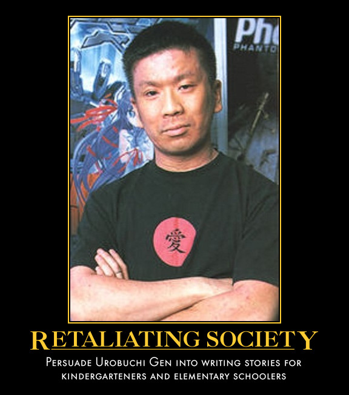
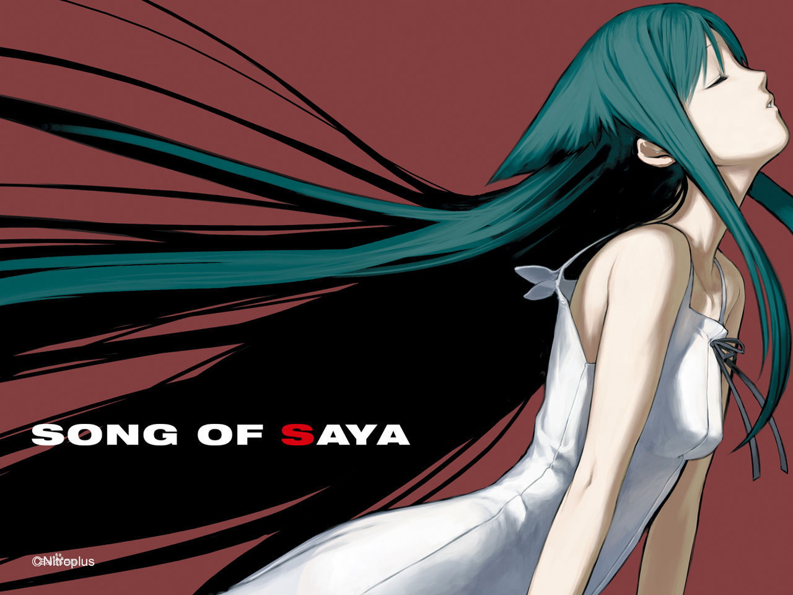
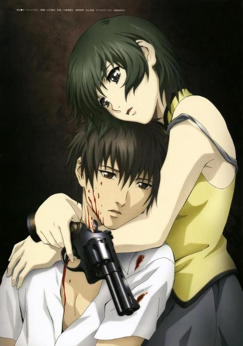
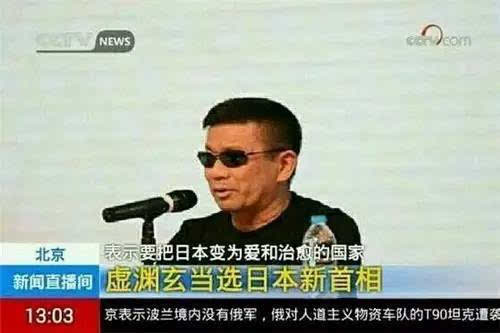
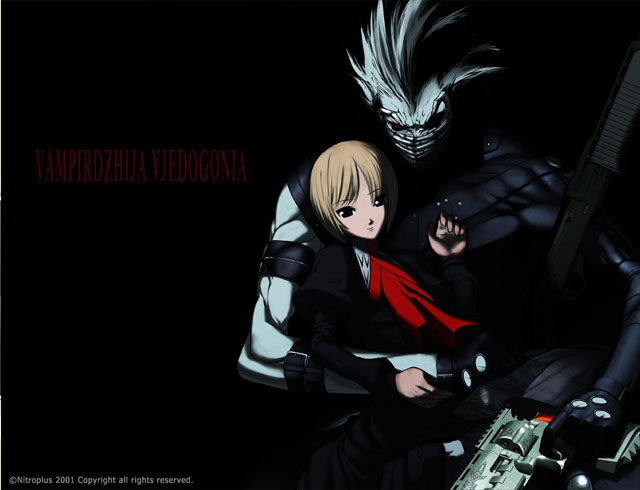
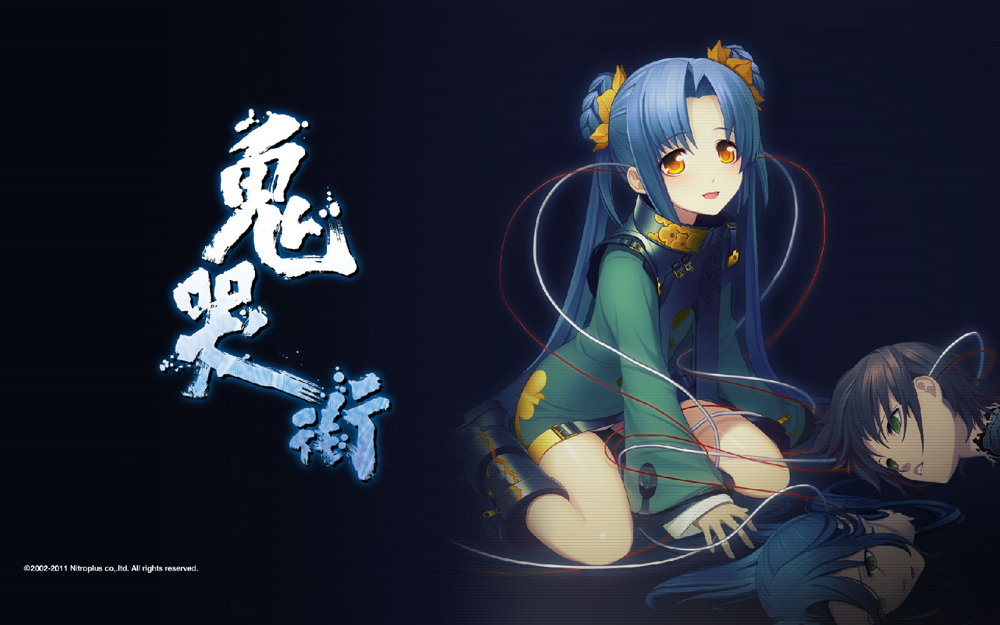
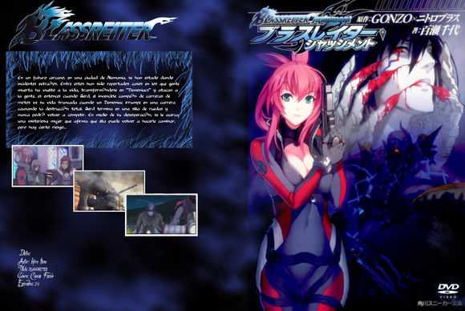
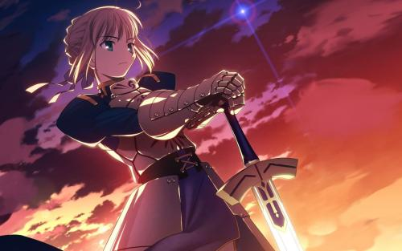
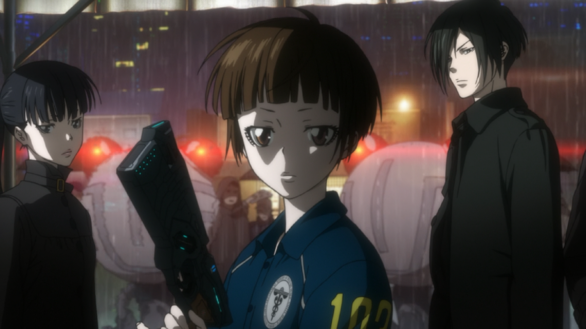

一个符号 一个标杆 一个人

自《魔法少女小圆》成为轰动性的名作之后，虚渊玄这三个字无可避免地成了一个微妙的符号，从曾经群体心中神圣不可侵犯的阳春白雪，到现在ACG领域的普罗大众谁都可以议论几句的对象，虚渊玄成就了自己盛名的同时，也毫无疑问被盛名所累。从来没有什么完美无缺的人，也不会有谁能让所有人满意，而这篇文章要谈的，就只是这样一个热爱电影和创作的，普通人类罢了。
这个世界上，要说公平公正不带个人色彩，那或许没有什么比履历表能更客观的介绍一个人的东西。面对一个陌生的名字，网络上的那些词条就是我们认识他/她的最初途径，登录维基百科，顺着洋洋洒洒的作品表一路看下来，再读几个访谈，东西总是那些，你也能构建出自己心中虚渊玄的形象。可若是将这些作品名、人名和年份背后的故事都扩展成一篇文章，那就一定逃脱不了落笔者的主观感情色彩。关于虚渊玄的综述文章，本文并不是第一篇，也不会是最后一篇，对一个人评价，总会随着他的作品不断推出的情况而改变。关于这一点最明显的体现便是，一名ACG爱好者对虚渊玄的看法如何，一定程度上也是自己对自己做分类的过程，这年头，谈到虚渊玄，你不会说一句“《魔法少女小圆》算什么，XXX（XXX为任意《魔法少女小圆》诞生前的虚渊玄作品）才是老虚的真神作”你都不好意思和人打招呼。每个人都倾向于去相信自己心中所塑造的虚渊玄形象，有的人将之奉若神明，有的人对其嗤之以鼻，更有甚者对其弃之敝履。首先会买这本增刊的你，一定不会是anti，除非你是抖M，否则没有必要为了看一本必然充满了对虚渊玄溢美之词的书而掏钱（当然借来的，那就不好说了）。但不同的人对老虚的不同态度，其实也是虚渊玄事业发展的另一个客观体现。

如果要对虚渊玄的履历做一个划分，在N+做游戏的时期和进军动画界的时期是一个分水岭，涉足动画界后创作小圆前与创作小圆后又是一个分水岭，在《PSYCHO-PASS》、《翠星之加尔刚蒂亚》反响微妙的现如今，接下《假面武士铠武》这活，或许将成为虚渊玄事业上的又一新分水岭。这几个阶段间，虚渊玄粉丝的构成和特性也经历了巨大转变。那些从黄油时代一路跟着老虚走过来的粉丝，起初彼此之间还能就“我是从饭桶时期就牢牢追随的资深粉，你是玩了一部沙耶就敢自称虚粉的伪非”争上一番，后来曾几何时被嘲笑民工的“沙耶”派也可以叫板小圆粉“没玩过老虚黄油的你们懂老虚什么”，再然后，连陈坤都看《Fate/Zero》了，于是那批黄油老害发现自己那心爱的、曾几何时要坐一个小时的车才能看到小馆子，变成连锁店开到了家门口，现在连隔壁老李家的熊孩子都能摇着头说这里的炒饭还没蓝蓝路的汉堡好吃。虚渊玄越是红，越是烂大街，他作品里本来没大多人在意的小问题就越是会被不断放大，这个名字背后的争议也越是强。虚渊玄这三个字不知不觉已经成为一个公式，大家期待这个公式里的绝望、残酷和超展开，可它终究是一个笔名，一个人类的笔名。而众所周知，人类，是最善变的动物。
创作的起点

虚渊玄前阵子刚好被人扒了家谱，曾祖父和田维四郎是一名矿物学者兼政治家，祖父大坪砂男是一名侦探小说家，父亲和田周是一位常演恶役的演员兼剧作家，母亲濑畑奈津子则是一位声优。在《读者》或《知音》系的杂志上或许会这样深情并茂地写道“出生书香门第的虚渊玄，从小就继承了父辈出类拔萃的文字天赋，显示出过人的文字能力，仿佛一出生就注定了要与文字相伴”，但估计这户人家怎么也不会想到自己的后代是会写工口起家。
之前曾有粉丝绘声绘色地给虚渊玄封了个“早稻田大学毕业，所属第二文学部”的名号，结果以讹传讹甚广，不少人都信以为真地写在了介绍虚渊玄的文章里，接着引起了更多人的误解。现在看来，这样的学历和这家世倒也合衬，但实际虚渊玄毕业于1966年开设大学教育的日本私立大学和光大学。
现在要放马后炮来谈谈虚渊玄身上的“命中注定”，那也不是没东西可说。虚渊玄从小和大部分日本小男孩一样，兴趣爱好就是模型玩具，一次，他在杂志上看到了《装甲骑兵》的外传小说，小说里出现了许多原创的新机体，让虚渊玄产生了一种小说可以“制造出东西”的感觉，继而初次意识到了创作的魅力，似乎也注定了他日后在宅界的打拼之路。
不过当年还是小学生的虚渊玄接触到的作品就都是对孩子来说不太友好的类型，为达目的不择手段的男主角之类，有心理阴影精神不稳定的主角之类，这些作品一定程度上影响了之后虚渊玄对角色塑造与展开的爱好，那个年代里没有“萌”的概念，几乎所有的作品都是“黑暗”的，而虚渊玄现在做的，就是“把老风格带入新作品里”。
虚渊玄这个笔名意味“漆黑的洞窟”，据他自己解释由来于史蒂芬金的小说《The Dark Half》，小说里有一个能冒出点子的深窟，当时他觉得其实这就是对作家获得灵感这一表现的暗喻，是一种描述作家在得到灵感后喷涌而出的神秘创作状态的贴切形容，所以印象非常深刻。被称为“鬼才”的虚渊玄，常会陷入一种混沌的创作状态，他说自己写东西时并不会一开始抱有某个主题或目的，有时候一直到写完了，都不明白自己到底写了什么，就像被逼入深窟一般，所以对她来说，去弄明白自己写的究竟是什么，也构成了一大写作的动力。
但是，虽然虚渊玄曾经一度以轻小说家为奋斗目标，却遭遇了失败，可谁知在他打算作为普通上班族老老实实生活下去的那家公司，老板却跑去开搞工口游戏，于是全公司上下唯一喜爱舞文弄墨的虚渊玄就被临时拉来写起了剧本，这恐怕就是命运了。
接着Nitro+就随着《Phantom》第一次出现在了人们的视野中。
现在看来《Phantom》虽然具备、甚至大大超越了一部美少女游戏应该达到的平均素质，可究其来源，它是虚渊玄乃至整个N+里的糙老爷们的一个爱好结晶。最初让虚渊玄认识到美少女游戏表现力的作品，是Leaf的两大名作《雫》及《痕》，所以最初着手开始做游戏的时候，他自然而言想到了参考Leaf作品的企划，但那个企划却让公司兴趣缺缺，直到他拿出这个致敬大作《Phantom》。面对这次千载难逢的创作机会，作为电影宅虚渊玄科室尽情地塞进一堆他喜爱的电影的元素，比如《这个杀手不太冷》、《黄昏双镖客》、《出租车司机》、《英雄本色》等等。虚渊玄的想法其实很简单：满足那些想要过着和动作片主角一样人生的人。飙车、枪战、年轻辣妹，这些好莱坞卖座商业片的必备元素，是为了满足人们飙升肾上腺素的需求而存在，而NirtoPlus，就是为了把这些化为工口游戏的先驱者。
作为一部游戏，《Phantom》的确是包含了不少致敬的成分，从它开始，“原创”和“借鉴”的问题也一直缠绕着“最强同人作家”虚渊玄，他曾经自嘲说自己没有原创性，就算没有刻意去模仿什么作品，还是会切实地将自己受到的影响表现出来，所以经常能看到虚渊玄老老实实地承认这次的XXX作品是借鉴了XXXX……但也不可说，《Phantom》就是一部拼凑的粉丝作，事实上，它是一个起点，它的存在充分地让人们看见了虚渊玄藏在字里行间的锋芒和对故事展开的控制力，那些致敬的桥段在《Phantom》里被虚渊玄展示出了自己的味道，所以之后他的故事才能继续下去。
概述虚渊玄的BadEnd美学

在正式开始虚渊玄在游戏和动画的两大阶段之前，必须要谈谈他著名的“Bad End依存症”。虚渊玄曾经不止一次表示过自己“无法想象（作品）Bad End以外的结束方式”，在他的内心深处，始终有着“通过自己的力量改变命运什么的，是不可能完成的事情”这样的悲观认识，进军动画界前，虚渊玄曾在访谈中提及，他创作时没有既定的规则，但始终遵守两个准则，那就是遵守伦理以及不违背事物的必然发展趋势，这两点恰恰体现的是他对“善”和“恶”的处理。以此我们也可以看出经常在虚渊玄的作品里出现的、主人公那近乎偏执的正义之心的由来。
所谓遵循伦理，即恶人一定有恶报，不会被姑息，那善人就一定有善报吗？虚渊玄的答案是否。在他看来，不会因为是美少女、因为做了多少好事、因为是多么的善良的人，就可以恰好躲掉发射而来的子弹。远藤浩辉的《EDEN》曾让他感受到巨大的共鸣，“即使做了这么好事的人，被爆弹击中也一样会肚烂肠散的死掉的啊，可这也并不是为了希望有这种死法而做出的演出效果”，这就是虚渊玄的残酷常理。像这样在面对致郁情节立场坚定的创作者其实还有很多，在作品里杀人如麻其实并不容易，可一旦把这些“谋杀”处理的好，那就能成就优秀的作品与巨大的关注度，最杰出的例子之一就是血刃狼家两代大佬的马丁胖子了。对于这些作者来说，这些角色的死亡或遭遇的不幸绝对不仅仅是一个噱头，都是顺应事态规律发展的必然结果，所以以这些情节发展地合乎常理为优先的话，其实就很少会出现在两条不同的剧情流向路线上无法取舍的情况。如果说虚渊玄是Bad End依存，他会告诉你一个让人难以反驳的理由：这才是真实。
只是，虚渊玄的真实其实一定程度建立在他个人偏执的基础上，所以他的“真实”相较其他作者而言，并不那么精工细作。虚渊玄不会将人们都希望的大团圆结局强加在故事身上，他笔下的角色如果追求的是遥不可及的幸福，那再怎么努力也不会得到。在他看来，这是常理，但这常理其实建立在他已经将主角的目标视为“遥不可及”的这一先决前提下了，那么，只要他改变这个先决条件，作品依然可以在不违背他那两个准则的前提下，合理地发展到一个相对缓和的局面，所以才有粉丝间所谓的“白虚”。
以上是就虚渊玄自己也意识到这个展开不让人顺心而言，另一类情况，就更可怕一些，那就是他按照自己的美学做出了自己认为完美无缺的展开，玩家和观众却感到被致郁了。
虚渊玄眼里萌，“是一种遥不可及的心念。是一种深爱着却触碰不到，神圣不可侵犯的、纯洁无垢的感觉。在征服、占有的那一瞬间，‘萌’的感觉就会随之消失。不过，从监禁、凌辱、调教之中，确实也能体会到无法理喻的快乐。”
他又曾说过“我希望彼此相爱的两人在幸福的顶点逝去，让最爱的人以最完美的姿态结束余生——我可不希望看到女主角睡觉时要烫主妇头贴面膜、为更年期症状而烦恼、成天把钱仍在老年化妆品和美容院里。在恋爱圆满之时迎来毁灭，这便是我的理想”，所以他非常痴迷没有未来的恋爱。
将一样事物在它最美好的时刻毁灭，就能让它永远保留住美好的瞬间是老虚式美学的一种，另一种就是没有回报又无人知晓的英雄主人公。如果你看过《死亡幻觉》，就会发现这部片子的最后半小时简直完美诠释了老虚心中的美学，几乎满足了他对展开和角色设置的一切需求习惯，无怪乎虚渊玄要用里面那只黑兔子做自己twitter头像。
不管怎么说，过去的虚渊玄，内心绝对称不上是积极向上的，可《魔法少女小圆》的成功毫无疑问也给他带来了一些心境上的专边，制作《翠星之加尔岗蒂亚》的期间，老虚被人感叹说整个人呈现出一种排毒后的爽朗状态，所以大众也纷纷认为剧本意外的非常不“虚渊玄”。一方面，在《魔法少女小圆》之后虚渊玄参与的两部动画都是合作性质的企划，另一方面，拥趸的增加，声明的显赫，合作伙伴们的爱戴，以及他可能一生也没想过的巨大成绩，也的确足以让他那漫长的中二期暂时告一段落。
不过，有一个创作上的习惯是被虚渊玄保留至今，那就是比起单纯的超展开带来的惊喜，他更在乎这种展开和转折是不是能带给玩家或观众震撼或冲击力，所以只要他还没放弃对于读者及观众在情感互动上追求，即使你不能指望他每部作品都搞个三花掉脑袋之类的展开，也不会担心看到一部彻底淡而无味的作品。
游戏人老虚

在2002年时，虚渊玄曾发表过一段非常卑微的自述，他说自己绝称不上是小说家，只不过是个为了满足GAL游戏玩家的欲望而将CG和音乐联系起来的填字艺人，“所以请无论如何关注我一下，请不要施以冷眼……”。
当时的虚渊玄，一定不会料想到自己不仅出了不少书，还担任起了动画编剧的职位。在99年赶制《Phantom》的时候，他还曾一度希望世界末日真的来临，“这样就能从手头的是事情里解脱了”。
尽管虚渊玄也有过创作低潮，但我们从来不曾从他的作品里看出他不在状态，自《Phantom》起，他在GAL这一块交出的作品，一直都保持着相当惊人的平均素质。只因为他是一个对游戏的素质有着相当要求的人，也是一个懂得不断自我改进的人。
经历战战兢兢地推出《Phantom》，却意外迎来了开门红的“奇迹”之后，虚渊玄曾试着在《吸血歼鬼》使用业内的通用模版，做一个普通的“萌”game。因此才会有那些模式化的GAL式角色：青梅竹马、眼镜娘和天然系，结果虚渊玄写着写着发现自己依然普通不起来，而且最后成品的质量不能让他自己满意，于是将之延期重改。在众人对N+的第二部作品满怀期待的情况之下宣布延期，对虚渊玄自己其实也是一个巨大的压力，但好在《吸血歼鬼》不仅维持了不错的销量，更重要的是为N+吸入了重要人才——当时有一部融合《月姬》、《吸血歼鬼》、《HELLSING》的同人小说《吸血大奸》引起了虚渊玄的注意，他后来将该同人企划的作者之一JIN（也就是钢屋）招致麾下，另一位参与了该企划的就是东出佑一郎，不过他并没有加入N+，倒是和他俩一起在“leaf图书馆”活动的另一位仁兄、并没直接参与这个企划的奈良原一铁后来进入了N+工作，一部游戏引发和两位主笔的渊源，也不失为成功之作了。
在《吸血歼鬼》期间，老虚意外地发现了自己在描写“住手呀哥哥”这类东西时的光芒，于是CYBERPUNK+古龙金庸+妹元素组成了他的下一部作品《鬼哭街》，这部在他看来都有些胡来的作品，尽管没有选择支、流程又短，却依然受到了如潮的好评，于是激发了他又一轮对玩家玩家的挑战——《沙耶之歌》。
那一年，钢屋在用《斩魔大圣》玩克苏鲁，并热情地将自己喜欢的克苏鲁小说推荐给虚渊玄，虚渊玄看了立马也兴起了搞一个的想法，克苏鲁元素、《火鸟》再加上那段时间让他和蘑菇等人都兴奋到不行的《腐姬》，成功被虚渊玄搞成了一个翻天覆地的《沙耶之歌》，本以为这次一定挑战到了玩家们的底线，结果大家竟然纷纷表示肉块好顶赞。被人们这样深深爱着，短时间内虚渊玄也觉得自己突破到了极限。

之后，他开始从创作一线暂退，期间N+的各位新人也在迅速成长，这一停，就是长达4年的空白期，大家天天伸长了脖子盼着他在游戏这一块的新动作时，虚渊玄再次不按常理出牌地推出了一部将随性发挥到极致的《续·杀戮的迪亚戈-地狱的赏金首-》，这部作品虽然虚渊玄玩的开心又满足，剧本和演出也都得到了好评，可它无论是角色设置、剧情推进模式还是其中“传统美少女游戏的味道”都是颠覆性的，macaroni westen式西部风情也没有之前《Phantom》大众化的枪战题材的接受程度高，敢于做出这样一部堪称反其道而行之的作品，充分体现了虚渊玄不同与其他那些作品出众却始终为销量所苦的GAL剧本家们的游刃有余，和“反派”的底气。说不定，《续·杀戮的迪亚戈-地狱的赏金首-》就是虚渊玄写的最后一部工口游戏了，显然现在虚渊玄在新战场已经乐不思蜀。动画剧本的构成与游戏剧本则相反，原设与监督们会填充缺漏，所以不需要在稿件上多废话，相比之下，虚渊玄觉得自己更适合这种“简洁”的写作。
动画人老虚

从00年到07年，虚渊玄一共为Nitroplus创作了五部游戏，且没有一部是失败作，毫无疑问，作为一个黄油作家的虚渊玄是成功的，可他第一次涉足动画界，就不那么顺利了。
首先，动画不同于之前N+那种小作坊的制作模式，是群策群力的结果。虚渊玄在写黄油时可以一个人天马行空，再加上他作为资深元老与功臣的极大话语权，让他近乎“一切说了算”，但进入动画界之后，则要开始学习与合作。在虚渊玄作为一个动画编剧接受采访时，经常会被问到创作动画剧本与以前写游戏游戏剧本和创作小说的不同，而他多半是回答“哎呀，动画的集体作业真是压倒性的有趣呐”，进军动画界的确第一次让虚渊玄体验到了作为一个新手的感觉。
在Nitroplus里创作游戏剧本时，虚渊玄一直都保持着近乎被放养的状态，他没有师傅带进门，也少有人能指导，但第一次尝试动画编剧的工作，他就遇到了两位经验丰富的前辈，板野一郎和黑田洋介。虚渊玄说，这两人堪称他的启蒙老师，前者在《Blassreiter》期间教会了他什么叫做“剧本”，后者在合作《Phantom~Requiem for the Phantom~》教会他剧本背后的“创作精神”。
《Blassreiter》是虚渊玄第一次担任系列构成，也是第一次学习写动画剧本，《Phantom~Requiem for the Phantom~》他的参与度相对要低，仅仅是去完成了几集剧本，从结果来说，两部动画都称不上成功，尤其是《Blassreiter》堪称一个“出色的遗憾”。
07年，NitroPlus宣布和GONZO携手推出《Blassreiter》，这是虚渊玄首次开拓新领土，也是目前为止唯一一部原汁原味体现N+时期虚渊玄风范的作品。《Blassreiter》是有野心的，本来他们打算做成动画界的《假面骑士》，要能让人们掏钱去买里面的机甲玩具，结果不要提卖玩具了，光是碟片的销量都惨绝人寰。《Blassreiter》的惨烈牺牲让虚渊玄充分认识到，即使是在能脱离工口要素的动画界，依然需要刺激到观众的商业要素，这不是你光设计一个打凶4的女主角然后全程晾着她专心讲男人间的故事就有用的，更不是有一个好故事一路硬派到底观众就会买账。
于是接下来，《魔法少女小圆》诞生，我们看见了虚渊玄对于“商业”、“炒作”、“卖点”等大卖要素的非凡领悟力。之前在游戏篇也曾提到，其实虚渊玄每推出一部作品都在求新求变，他的每一部新作都是建立在旧作上的成长，《魔法少女小圆》就一下子弥补了让《Blassreiter》遭遇暴死的所有问题。有萌、有噱头、有便当、有高浓度有意、还有新房，作品以外，从前期炒作到twitter造势，宣传跟进的也是相当给力。于是乎，碟片卖疯，人气暴涨，接着推出两部剧场版也是理所当然的事情。短短间隔一部作品的时间，虚渊玄已经能将商业运作的如此娴熟，他熟悉了规则，掌握了规则，接着玩弄规则于手掌之中，实在令人赞叹。
紧接着随后的那年，《Fate/Zero》被动画化，虽然虚渊玄没有直接参与动画的制作，但可以毫不客气的说，落在那个把《忘却录音》改成鲜花卖萌秀、在《Fate/Zero》里宁愿开辟一整集做凛卖萌也不愿意在王军上花一秒、做动画节奏拖沓到死的业界第一型月动画公司ufotable手里，还能这么受欢迎，虚渊玄出色的原作功不可没。

连续两年和最热话题作联系在一起，当时的虚渊玄只能用风光一时无二形容，只不过，不应期也开始了。
2011年虚渊玄宣布加入《PSYCHO-PASS》的制作，这部动画刚播出第一话就引起了观众们对设定的热烈讨论，中途不断有人因为各种bug和交代不清而扔片，坚持下来的大伙伴们则发现，一直讨论到了最后一集，动画里对重中之重的设定问题也没彻底交代清楚。最后大家才明白过来，本片的正确观赏方式应该是完全忽略设定的存在，它给什么，你就接受什么，别质疑，像动画里那群市民一样就好了。
虽然设定上存在各种站不住脚的问题，但只要不去仔细想，《PSYCHO-PASS》依然是一部堪称成功的商业作品。现在说起《PSYCHO-PASS》，几乎大家第一反应都是这是虚渊玄一个人的事，实际上他并不是这部动画的系列构成，完成动画剧本草稿的是深见真和高羽彩，提出这个企划想法的是头一次做动画的著名监督本広克行（《跳跃大搜查线》系列），而虚渊玄则是后期作为主笔参与进来的。《PSYCHO-PASS》的访谈里虚渊玄说过集体作业的乐趣之一就是自己的点子，就像是种下一棵种子，不知道会开出什么颜色的花来，不过有一点可以确定，虚渊玄再度不负众望地把观众想看的、属于“虚渊玄”这个“标签”应该有的东西全都一股脑地倒在了《PSYCHO-PASS》里。这次他虽说在设定借鉴了菲利普·K·迪克，手法上借鉴了《银翼杀手》，可最终呈现的效果还是更偏向本广克行的风格，有些日剧的味道，不过，应该有的猎奇和剧情爆点依然不少。尽管片中的猎奇杀人和《Fate/Zero》的肠子琴一样引起了部分观众对他过于“哗众取宠”的指责，但虚渊玄的确完满完成了他的角色和任务，而那些追求刺激的观众，也能通过在弹幕上刷一句“不愧是爱的战士”达到满足。确切的来说，《PSYCHO-PASS》的虚渊玄定位相当明晰，之前他的那些创作习惯已经培养出一批带有惯性的观众，他们如果看完一集虚渊玄做剧本的动画后，发现“爱的战士”没上线，就会感到无趣和失望，这对于一个剧本家并不算会死一件好事。或许正因如此，才有了之后的“革新之作”《翠星之加尔岗蒂亚》。
前文提过，虚渊玄非常重视情节的发展是否能带给人震撼，这使得虚渊玄在安排剧情走向时并不能像自己所说的那样公正客观，面对一个积极的“奇迹”式桥段是否发生时，他一般会遵循常理选择否，但如果是在积极和消极间做选择，他会毫不犹豫地选择消极的一方。所以“虚渊玄式 Bad End”初看闭嘴惊艳，看多了，就会因为细致度不够合理性不足而被部分观众认为有“为黑而黑”之嫌，毕竟如果所有路线都选择了最坏的可能，这本身就不是遵循事物发展应有的流动，而是刻意。动画、轻小说和美少女游戏都是偏快餐式的媒介，如何在短时间内吸引眼球是成功的重大要诀，这一点虚渊玄都已经做到过了，接下来，他要面对的，其实是如何不让观众对他的“Bad End 依存”。

虚渊玄之前一直都想给高达动画写剧本，理由是可以向黑田洋介炫耀，所以《翠星之加尔岗蒂亚》刚一出来，不少人都以为这是虚渊玄用来练手的萝卜动画，谁知在开场的战斗之后就进入了欢乐日常，而且真的如他开播前所言，一点都不致郁，这让他的致郁系粉纷纷感到期待落空，造成既定映像是很可怕的一件事情，观众们会不断用这个他们总结出的“既定规则”套在你的作品上，如果没有遵循，便会让观众失望，可如果一路老老实实的遵循，也很快就会被厌烦。所以《翠星之加尔岗蒂亚》并不一定像部分拥趸们想的那样令人沮丧，相反，它们让我们看见了虚渊玄对去掉“Bad End 依存症”所做的努力：不再通过致郁展开来博得眼球，不再通过猎奇表现来博取噱头，他一样可以提供让人惊讶给人震撼的故事。当然，《翠星之加尔岗蒂亚》也存在一些牵强的情节和bug，谈不上成功，说不定下一部作品虚渊玄发现此路不如想象中顺畅于是又回去走了老路，但《翠星之加尔岗蒂亚》的存在本身，已经是虚渊玄带给他们真爱粉们的惊喜了。
虚渊玄还有一部与水岛精二合作的剧场版动画《乐园追放》将于明年上映，在原作一栏久违地又出现了Nirtoplus的名字，或许有机会让我们再度重温N+时期的虚渊玄。
轻小说作家老虚
现在让我们再把时间切换回03年《沙耶之歌》发售后虚渊玄的那段4年的空白期，这个时间虚渊玄做的事情用六个字就可以概括“交基友，写小说”。
04年底，《鬼哭街》的同名小说和《白貌传道师》相隔几天先后发售，后者是虚渊玄第一次声称自己是“爱的战士”的作品，可紧接着他的爱就燃尽了，进入了创作的枯井期。
这个时候，是奈须蘑菇毅然挺身而出，把Saber献给虚渊玄当玩具（确切地说，邀请虚渊玄写《Fate/stay night》同人短篇的是奈须的正宫武内崇），重新救回了他的创作热情。
虚渊玄和奈须的结实，源于点击姬编辑的安排。当时因为《月姬》崭露头角的奈须对虚渊玄还处于小粉丝的状态，当年他因为非常钟爱《吸血歼鬼》而又跑去买了《Phantom》，结果一举掉坑无法自拔，紧接着《鬼哭街》又令他大受震撼，在竹帚BBS上大发感言，正好被点击姬的编辑瞧见，于是就有了这次超级新人X超强力剧本家的对谈。因为两个人都是电影迷，所以很自然的一见如故成为了朋友。
现在两人已经是超级老友，虚渊玄会非常随意地表示，喜欢强攻系妹属性角色的他多奈须蘑菇充满敬意完全是因为黑桐鲜花的缘故，奈须也会笑言虚渊玄“现在他甚至以为自己是伟人之一了”。《Fate/Zero》就像给虚渊玄的创作道理加了一次油，尽管倒过来蘑菇自己不得不背负粉丝拿着两部作品做比较的压力，也不失为一段美谈。
另一位与虚渊玄合作小说作品的广江礼威，情况与奈须正好倒过来。虚渊玄很早就是广江礼威漫画的粉丝，广江礼威则是先被《Phantom》的美少女枪战题材所吸引，随后又在接触虚渊玄的其他作品期间越发觉得此人与自己臭味相投。其实现在看来，虚渊玄与广江礼威没有搞在一起才是咄咄怪事，两个人不仅在创作上的喜好有诸多相似之处，作品风骨都相当凛冽，有时还能想到类似的点子，可两人真正得以见面，已经是07年底。在某动画工作室的撮合下，两人甫一相见，果不其然相见恨晚，于是广江礼威就将《黑礁》的外传小说付托给了虚渊玄，再成就一段好“姻缘”。
之后，虚渊玄又推出了两本原创的轻小说《アイゼンフリユーグル》和《金の瞳と鉄の剣》，两者都呈现出了虚渊玄的不同风貌，《アイゼンフリユーグル》意味着纯粹，《金の瞳と鉄の剣》则意外的基（误）。
小说或许不曾是虚渊玄的事业中心，但这些排除了语音、CG和演出的文本，其实恰恰能呈现出最本质的虚渊玄。
结语
前不久《假面骑士铠武》宣布了将有虚渊玄担任脚本的消息，曾几何时这个系列也是他热衷与借鉴的对象，现如今他自己已将称为一个新系列的创作者，这无疑是业界给予最佳肯定。从一个领域到另一个领域，从新手到老手，虚渊玄永远跑得如此之快，只要不摔倒，那没有人能预想到他究竟能抵达多远的地方。但他毕竟是一个人，虚渊玄这个名字是个适合突然袭击的惊喜，所以我们若是抱着一定会出现惊喜的心情眼巴巴的等待，那惊喜必然要打折，希望今后的老虚，既不改他处理情节时的锋利，又不被观众和自己逼上为黑而黑的麻木之路上去。